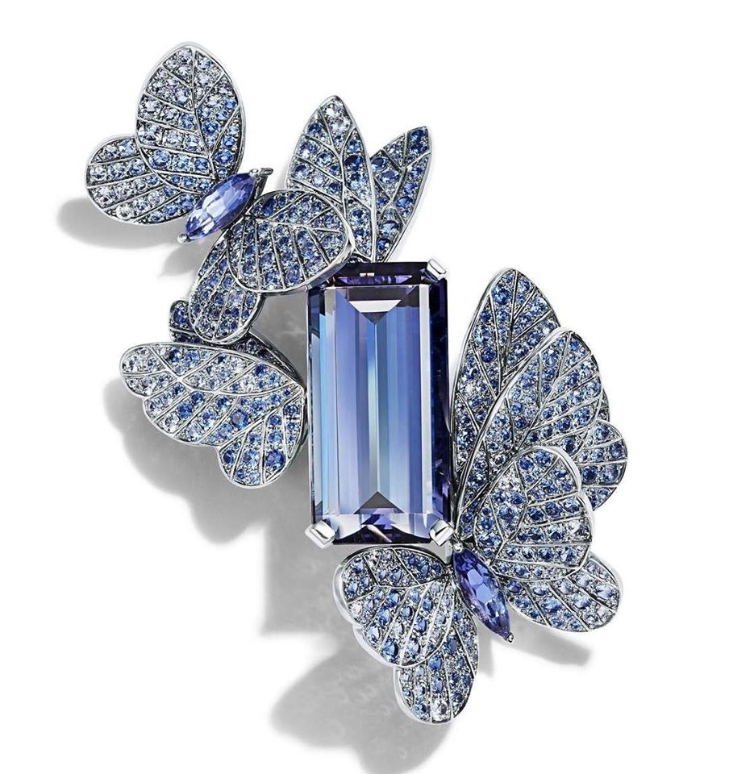
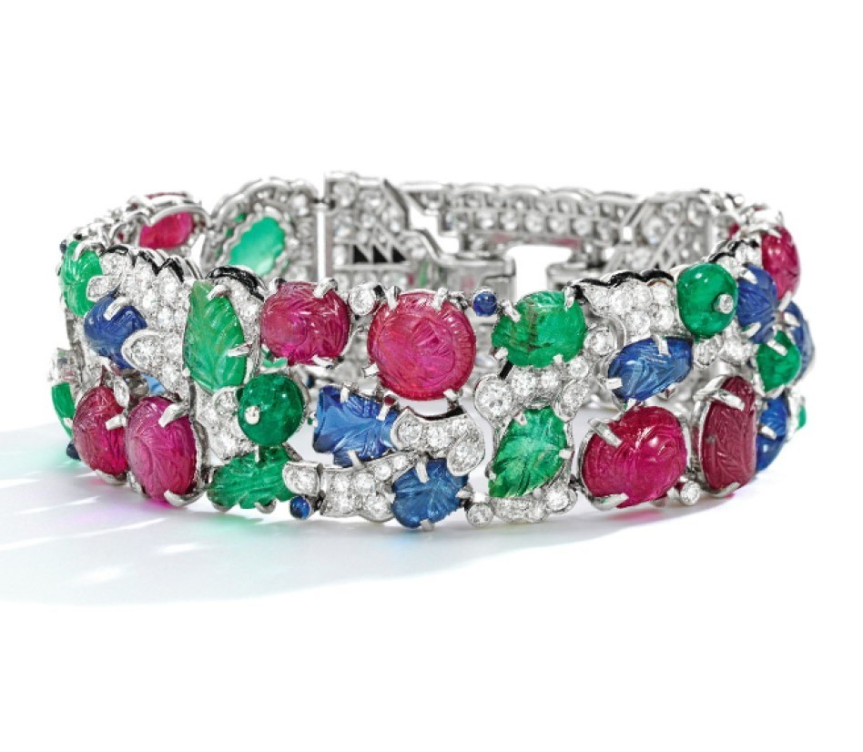

Jewellery History

珠寶設計是一門悠久的領域，
從古老的文藝復興時期到工業革命時期，
珠寶設計通常都被定義為一種功能性，穿戴性，
使用性皆高的技藝。
珠寶製作技術主要應用的材質，
大致可依然區分為黃金，白金，銀，寶石或半寶石
早期珠寶設計
西元前一世紀，寶石切割方式可說是珠寶設計的核心技術，最早的寶石切割技術記載，是由西奧菲勒斯長老在西元前1070年至1125年之間紀錄的。14世紀之後的寶石切割技術，演進到戒面與雕刻手法等領域。當時許多手法由貴族組成的珠寶設計委員會所控制，並將設計與社會階級結合，某些教會，皇室與家族擁有特定的設計手法，例如徽章與紋飾，也擁有特殊的寶石組成方式。這些都是用來彰顯財富，地位或權利。
這些珠寶設計風格多半和當時的藝術，建築，裝飾風格有關連，例如後來產生了巴洛克風格的珠寶設計運動，流派的演進也有明顯的變化。
例如1714-1830年間，流行以自然元素，綠色，紫色的寶石來設計珠寶，並稱為喬治亞時期。而接下來的早期維多利亞時間，增加了動物主題，多色金屬一起組合的設計，維多利亞中期，則開始流行五色的珠寶，並混入貝殼，流蘇，馬賽克等等手法。且因阿爾伯特親王的過世，煤玉這個材質開始廣泛流行在當時的珠寶設計上。
當代珠寶設計
當代的珠寶設計，則受到現代主義運動的影響深遠，前衛的珠寶設計師經常會交錯使用具現代感的幾何元素，混合材質如橡膠，塑料，不銹鋼等和獨特的穿戴方式。
現今的珠寶設計，由珠寶設計師的設計理念貫穿，主要先結合時尚趨勢的概念，創作詳細的珠寶設計圖，接著進行專業的製造過程。
珠寶設計的過程，通常會將寶石與金屬各分為兩個階段處理，寶石部份進行切割，挑選，金屬部份進行鑄造，脫模，拋光，如還有特殊材質則也是另外處理，最後才處理組合，鑲嵌，吊掛，包裝等流程[8]，多數的珠寶設計師依然使用最傳統的手繪方式，來創作珠寶設計圖，少數的珠寶設計師已經運用3D軟體將設計數位化。以求利用電腦科技的渲染技法，使珠寶設計完稿時，能越接近實品。

關於生日石
誕生石也稱為生日石，是用來贈送給公曆中各個月份誕生人們的貴重禮物，常在生日或周年慶作為賀禮。
早期印度及巴比倫文明認為寶石具有神奇能力。占星家逐漸以特定顏色的寶石配合黃道十二宮來促進該星座人士的運氣。
寶石總被認為有神奇的能量，占星學家以特定的寶石顏色、特性等，來配合各個月份出生的人，也許能為你補足該有的氣場，增強自信或是提供保護。以下就來看看與你出生月份相對應的誕生石！
January - April
May - August
September - December
如何保養首飾
市面上雖販售著各式的珠寶清潔劑與機器，但未必適合每一種珠寶，如果不了解寶石的特性，使用了錯誤的清潔方式，輕則影響寶石美觀，重則可能造成寶石破裂。溫肥皂水與軟毛牙刷最適合.
平日將珠寶首飾間隔存放於珠寶盒內，如果有需要攜帶外出時，最好每一件首飾都有一個專屬袋子，以此避免硬度不相同的寶石互相磨擦導致破損或刮傷。
準備出門前，配戴珠寶永遠是最後一個步驟，配戴前你應該穿好衣服，並且完成一切保養與化妝。脫衣服時，要記得先將珠寶首飾取下，避免去拉扯或勾到首飾，導致損傷。
最好不要將珠寶放置在陽光直射的地方，並且遠離熱源，陽光會使寶石褪色，也會造成許多有機寶石的損傷。
空氣中有許多物質，其中也包含許多礦物的細小微粒，經常性地擦拭珠寶首飾，會累積許多小刮傷，導致金屬部分光澤不再，寶石若是硬度不夠，也會造成刮痕。最好是在每次擦拭前都用清水洗過，降低刮傷風險。